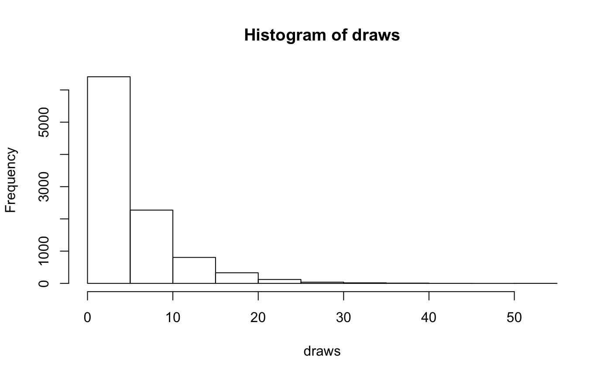
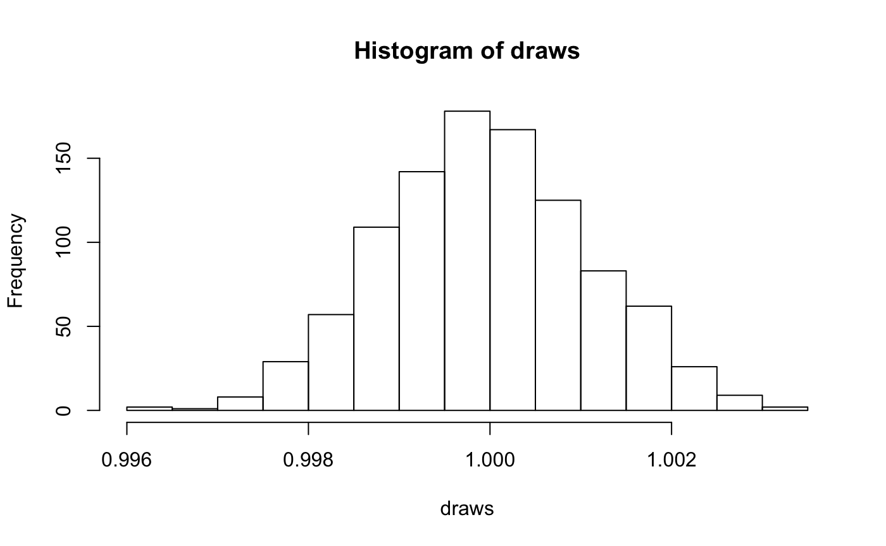
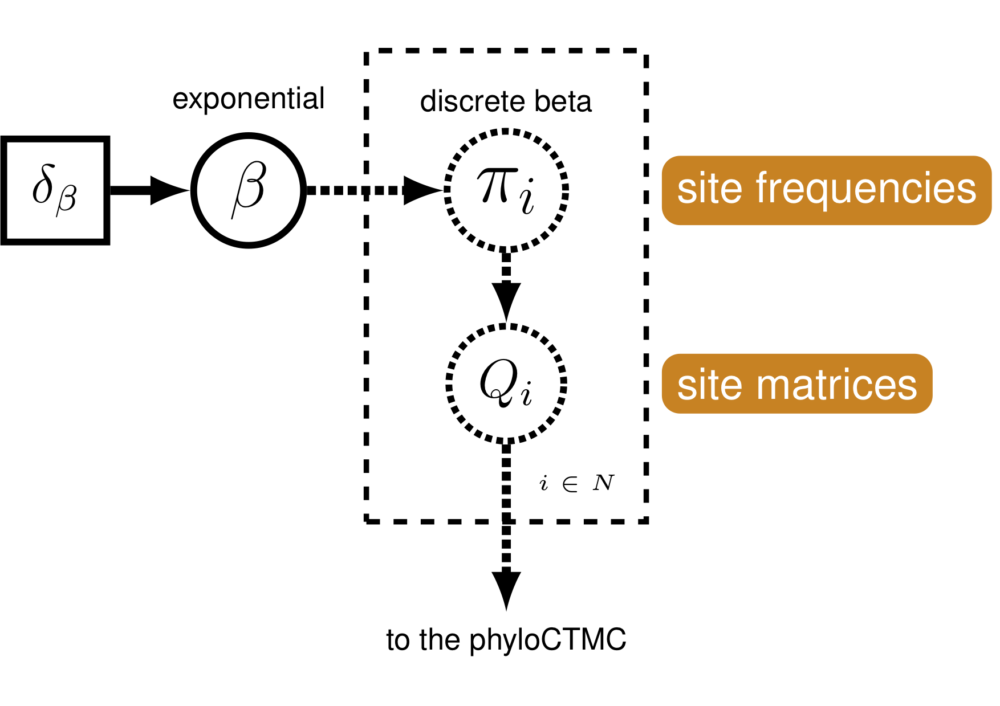

Discrete morphology - Models and Tree Inference
April M. Wright
Source:vignettes/module_05_TripartiteModel1_morph_change_models/05_RB_MCMC_Discrete_Morph.Rmd
05_RB_MCMC_Discrete_Morph.RmdIntroduction to phylogenetic models of morphological evolution
Morphological data is commonly used for estimating phylogenetic trees from fossils. This tutorial will focus on estimating phylognetic trees from discrete characters, those characters which can be broken into non-overlapping character states. This type of data has been used for estimation of phylogenetic trees for many years. In the past twenty years, Bayesian methods for estimating phylogeny from this type of data have become increasingly common.
This tutorial will give an overview of common models and assumptions when estimating a tree from discrete morphological data. We will use a dataset from Zamora, Rahman, and Smith (2013). This dataset contains 23 extinct echinoderm taxa and 60 binary and multistate characters.
Overview of Discrete Morphology Models
 Graphical model showing the Mk model (left panel). Rev code specifying the Mk model is on the right-hand panel.
Graphical model showing the Mk model (left panel). Rev code specifying the Mk model is on the right-hand panel.
As technologies for obtaining low-cost and high-throughput nucleotide sequence data have become available, many scientists have become reliant on molecular data for phylogenetics. However, morphological data remain the only direct observations we have of most extinct organisms, and are an independent data source for understanding phylogeny. Many of the phylogenetic methods we will discuss in this tutorial were invented for use with sequence data. However, these methods are still very useful for discrete morphological data. We will examine some common assumptions for modeling data in a phylogenetic context, then move on to look at relaxing these assumptions.
Modeling discrete morphological data requires an understanding of the underlying properties of the data. When we work with molecular data, we know a priori that certain types of changes are more likely than other. For example, changes within a type of base (purine and pyrimidine) are much more likely than changes between types of bases. This information can be used to add parameters to the phylogenetic model. There are not equivelant and generalizeable truths across characters in a morphological data matrix. For example, while 0 and 1 are commonly coded to “presence” and “absence.” However, this is not always the case. Nor are all characters atomized at the same magnitude. For example, at one character, changing character states may not reflect a large amount of genetic changes. Theca shape (character 2 in the Zamora et al. 2013 dataset), for example appears quite labile. At another, the changes to the character state may reflect a rearrangement of genetic elements, or might have larger ramifications for the organism’s life and behavior. Character 38, the central plate of the lintel, may be one such character, as it changes seldom.
When we work with morphological data in a Bayesian context, we are performing these analyses after a long history of workers performing phylogenetic analysis in a maximum parsimony framework. Under maximum parsimony, trees are proposed. The number of changes in the data implied by the tree are then counted. The tree implying the fewest changes is considered the best. There may be multiple most parsimonious trees in a dataset. Parsimony has been the dominant method for estimating phylogenetic trees from discrete morphological data. Characters that cannot be used to discriminate between tree topologies are not typically collected by workers using parsimony. For example, characters that do not vary are not collected, as they all have the same length (0 steps) on a tree. Likewise, autapomorphies are typically not collected. As we will see later, this has ramifications for how we model the data.
For many years, parsimony was the only way to estimate a phylogenetic tree from morphological data. In 2001, Paul Lewis published the Mk model of morphological evolution. The Mk model (Lewis 2001) is a generalizationof the Jukes-Cantor model (Jukes and Cantor 1969) of nucleotide sequence evolution. This model, while simple, has allowed researchers to access the toolkit of phylogenetic methods available to researchers working with other discretely-valued data, such as nulceotides or amino acids.
The Mk Model
As mentioned above, the Mk model is a generalization of the JC model. This model assumes that all transitions between character states are equal, and that all characters in the matrix have the same transition matrix. The transition matrix for a binary trait looks like so:
\[Q = \begin{pmatrix} -\mu_0 & \mu_{01} \\ \mu_{10} & -\mu_1 &\\ \end{pmatrix} \mbox{ ,}\]
In this matrix, \(\mu\) represents the transition probability between the two states that follow it. A transition matrix for multistate data simply expands.
\[Q = \begin{pmatrix} -\mu_0 & \mu_{01} & \mu_{02} & \mu_{03} \\ \mu_{10} & -\mu_1 & \mu_{12} & \mu_{13} \\ \mu_{20} & \mu_{21} & -\mu_2 & \mu_{23} \\ \mu_{30} & \mu_{31} & \mu_{32} & -\mu_3 \end{pmatrix} \mbox{ ,}\]
However, the Mk model sets transitions to be equal from any state to any other state. In that sense, our multistate matrix really looks like this:
\[Q = \begin{pmatrix} -(k-1)\mu & \mu & \mu & \mu \\ \mu & -(k-1)\mu & \mu & \mu \\ \mu & \mu & -(k-1)\mu & \mu \\ \mu & \mu & \mu & -(k-1)\mu \\ \end{pmatrix} \mbox{ ,}\]
You might notice that these transition rates are not different than what we might expect from an equal-weights parsimony matrix. In practice, the Mk model makes very few assumptions due to the complexity and non-generalizeability of morphological data.
This model may strike some readers as too simplistic to be adequate for morphological data. However, Bayesian methods are less likely to be mislead by homoplasy than is parsimony (Felsenstein 1983). More recent work has demonstrated that the model outperforms parsimony in many situations, particularly those in which there is high homoplasy (Wright and Hillis 2014), with empirical work demonstrating that it fits many datasets reasonably well (Wright, Lloyd, and Hillis 2016).
In the first part of this tutorial, we will estimate a tree under the Mk model as proposed by Lewis (2001). We will then relax core parameters of the model.
Ascertainment Bias
One remaining component of the model we have not yet discussed is ascertainment bias. Because workers using parsimony do not collect invariant characters and seldom collect autapomorphies, our data are biased. Imagine, for a moment, that you were to measure the average height in a room. But first, you asked the 10 shortest people to leave. Your estimate of the average height would be too tall! In effect, this happens in the morphological data, as well. Because the characters with the fewest changes are not colelcted, we over estimate the amount of evolutionary change on the tree. At the time of publication, Lewis (2001) also included a correction factor for this bias.
These original corrections involved simulating parsimony non-informative characters along each proposed tree. These would be used to normalize the likelihood value. While this procedure is statistically valid, it is a bit slow. There are multiple ways to perform this correction (???). RevBayes uses a dynamic likelihood approach to avoid repeated simulations.
Example: Inferring a Phylogeny of Extinct Cinctans Using the Mk Model
Tutorial Format
This tutorial follows a specific format for issuing instructions and information.
The boxed instructions guide you to complete tasks that are not part of the RevBayes syntax, but rather direct you to create directories or files or similar.
Information describing the commands and instructions will be written in paragraph-form before or after they are issued.
All command-line text, including all Rev syntax, are given in monotype font. Furthermore, blocks of Rev code that are needed to build the model, specify the analysis, or execute the run are given in separate shaded boxes. For example, we will instruct you to create a constant node called example that is equal to 1.0 using the <- operator like this:
It is important to be aware that some PDF viewers may render some characters given as differently. Thus, if you copy and paste text from this PDF, you may introduce some incorrect characters. Because of this, we recommend that you type the instructions in this tutorial or copy them from the scripts provided.
Data and Files
On your own computer, there should be a directory called PaleoSoc_phylo_short_course_2019. The data for this tutorial are in the subdirectory data This directory should contain:
Cinctans_for_RevBayes.nex.
Getting Started
Create a new directory (in
PaleoSoc_phylo_short_course_2019) called scripts.
When you execute RevBayes in this exercise, you will do so within the main directory (PaleoSoc_phylo_short_course_2019), thus, if you are using a Unix-based operating system, we recommend that you add the RevBayes binary to your path. Alternatively make sure that you set the working directory to, for example, PaleoSoc_phylo_short_course_2019 if this is the directory you stored the scripts and data in.
Creating Rev Files
In this exercise, you will work primarily in this R text editor and create a set of files that will be easily managed and interchanged.
In this section you will begin the file and write the Rev commands for loading in the taxon list and managing the data matrices. Then, starting in section Mk Model, you will move on to specifying each of the model components. Once the model specifications are complete, you will complete the script with the instructions given in section
Load Data Matrices
RevBayes uses the function readDiscreteCharacterData() to load a data matrix to the workspace from a formatted file. This function can be used for both molecular sequences and discrete morphological characters. Import the morphological character matrix and assign it the variable morpho.
morpho <- readDiscreteCharacterData("data/Cinctans.nex")## Successfully read one character matrix from file 'data/Cinctans.nex'Create Helper Variables
We will dig into the model momentarily. But first, we will create some variables that are used in our analysis, but are not parameters. We will assign these variables with the constant node assignment operator, <-. Even though these values are used in our scripts, they are not parameters of the model.
We will first create a constant node called num_taxa that is equal to the number of species in our analysis (23). We will also create a constant node called num_branches representing the number of branches in the tree, and one of the taxon names. This list will be used to initialize the tree.
taxa <- morpho.names()
num_taxa <- morpho.size()
num_branches <- 2 * num_taxa - 2Next, create two workspace variables called mvi and mni. These variables are iterators that will build a vector containing all of the MCMC moves used to propose new states for every stochastic node in the model graph. Each time a new move is added to the vector, mvi will be incremented by a value of 1.
moves = VectorMoves()
monitors = VectorMonitors()One important distinction here is that mvi is part of the RevBayes workspace and not the hierarchical model. Thus, we use the workspace assignment operator = instead of the constant node assignment <-.
The Mk Model
First, we will create a joint prior on the branch lengths.
br_len_lambda ~ dnExp(0.2)
moves.append(mvScale(br_len_lambda, weight=2))This prior specifies that branch lengths will be drawns from an exponential distribution with parameter 0.2. If you’re not familiar with what an exponential distribution, try setting the below code to eval = FALSE to run the R code and visualize the distribution. Set eval = FALSE when you are done.

Now, we combine the branch lengths with a uniform prior on topology to make a tree. The uniform prior simply means no tree is more likely a priori than any other. This can be easily changed, for example, to use a starting tree. We then specify MCMC moves on the topology, NNI and SPR. These moves propose new topologies. In this way, we propose and evaluate new sets of relationships. We perform these moves frequently because these parameters are really important. We will also move each of the branch lengths each iteration. The scale move scales the current branch legnth. Finally, we monitor the tree length. This is a quantity many biologists are interested in.
phylogeny ~ dnUniformTopologyBranchLength(taxa, branchLengthDistribution=dnExponential(br_len_lambda))
moves.append(mvNNI(phylogeny, weight=num_branches/2.0))
moves.append(mvSPR(phylogeny, weight=num_branches/10.0))
moves.append(mvBranchLengthScale(phylogeny, weight=num_branches))
tree_length := phylogeny.treeLength()We will add Gamma-distributed rate variation and specify moves on the parameter of the Gamma distribution.
alpha_morpho ~ dnUniform( 0, 1E6 )
rates_morpho := fnDiscretizeGamma( alpha_morpho, alpha_morpho, 4 )
#Moves on the parameters of the Gamma distribution.
moves.append(mvScale(alpha_morpho, lambda=1, weight=2.0))If you are unfamiliar with the gamma distribution, feel free to run the below code to visualize the distribution.
library(ggplot2)
alpha_morpho <- runif(1, 0, 1E6 )
draws <- rgamma(1000, shape = alpha_morpho, rate = alpha_morpho)
hist(draws)
Next, we will create a \(Q\)-matrix. Recall that the Mk model is simply a generalization of the JC model. Therefore, we will create a \(Q\)-matrix using fnJC, which initializes \(Q\)-matrices with equal transition probabilities between all states. Since we have multistate data, we need to specify different \(Q\)-matrices for the different number of character states. For example, it would not make sense to model a 5-state character using a model saying there are only two character states.
To do this, we have written a loop in which we break up the data set into partitions according to the number of character states that character has. Then, we specify a \(Q\)-matrix in the correct dimensions. We do not retain any partitions that do not have any characters. For example, if we tried to partition the characters with 4 states, and there were none, we would not create a \(Q\)-matrix.
Then, we combine each partition, Gamma-distributed rate heterogeneity, and the tree together into what is called the phyloCTMC. This is the joint set of model paramters that will be used the model these data. Each partition is then clamped to its model.
n_max_states <- 7
idx = 1
morpho_bystate[1] <- morpho
for (i in 2:n_max_states) {
# make local tmp copy of data
# only keep character blocks with state space equal to size i
morpho_bystate[i] <- morpho
morpho_bystate[i].setNumStatesPartition(i)
# get number of characters per character size wth i-sized states
nc = morpho_bystate[i].nchar()
# for non-empty character blocks
if (nc > 0) {
# make i-by-i rate matrix
q[idx] <- fnJC(i)
# create model of evolution for the character block
m_morph[idx] ~ dnPhyloCTMC( tree=phylogeny,
Q=q[idx],
nSites=nc,
siteRates=rates_morpho,
type="Standard")
# attach the data
m_morph[idx].clamp(morpho_bystate[i])
# increment counter
idx = idx + 1
idx
}
}## [1] 2
## [2] 3
## [3] 4We see some familiar pieces: tree, \(Q\)-matrix and rates_morpho. We also have two new keywords: data type and coding. The data type argument specifies the type of data - in our case, “Standard”, the specification for morphology. All of the components of the model are now specified.
Complete MCMC Analysis
Create Model Object
We can now create our workspace model variable with our fully specified model DAG. We will do this with the model() function and provide a single node in the graph (phylogeny).
mymodel = model(phylogeny)The object mymodel is a wrapper around the entire model graph and allows us to pass the model to various functions that are specific to our MCMC analysis.
Specify Monitors and Output Filenames
The next important step for our Rev-script is to specify the monitors and output file names. For this, we create a vector called monitors that will each sample and record or output our MCMC.
The first monitor we will create will monitor every named random variable in our model graph. This will include every stochastic and deterministic node using the mnModel monitor. The only parameter that is not included in the mnModel is the tree topology. Therefore, the parameters in the file written by this monitor are all numerical parameters written to a tab-separated text file that can be opened by accessory programs for evaluating such parameters. We will also name the output file for this monitor and indicate that we wish to sample our MCMC every 10 cycles.
monitors.append( mnModel(filename="output/mk_gamma.log", printgen=10))The mnFile monitor writes any parameter we specify to file. Thus, if we only cared about the branch lengths and nothing else (this is not a typical or recommended attitude for an analysis this complex) we wouldn’t use the mnModel monitor above and just use the mnFile monitor to write a smaller and simpler output file. Since the tree topology is not included in the mnModel monitor (because it is not numerical), we will use mnFile to write the tree to file by specifying our phylogeny variable in the arguments.
monitors.append( mnFile(filename="output/mk_gamma.trees", printgen=10, phylogeny))The third monitor we will add to our analysis will print information to the screen. Like with mnFile we must tell mnScreen which parameters we’d like to see updated on the screen.
monitors.append(mnScreen(printgen=100))Set-Up the MCMC
Once we have set up our model, moves, and monitors, we can now create the workspace variable that defines our MCMC run. We do this using the mcmc() function that simply takes the three main analysis components as arguments.
mymcmc = mcmc(mymodel, monitors, moves, nruns=2, combine="mixed")## [1] Could not compute lnProb for node m_morph[1].
## [2] Standard character matrix with 27 taxa and 60 charact
## [3] Drawing new initial states ...
## [4] Could not compute lnProb for node m_morph[1].
## [5] Standard character matrix with 27 taxa and 60 charact
## [6] Drawing new initial states ...
## [7] Could not compute lnProb for node m_morph[1].
## [8] Standard character matrix with 27 taxa and 60 charact
## [9] Drawing new initial states ...The MCMC object that we named mymcmc has a member method called .run(). This will execute our analysis and we will set the chain length to 10000 cycles using the generations option.
mymcmc.run(generations=10000, tuningInterval=200)## [1] Running MCMC simulation
## [2] This simulation runs 2 independent replicates.
## [3] The simulator uses 5 different moves in a random move schedule with 87.2 moves per iteration
## [4] Iter | Posterior | Likelihood | Prior | elapsed | ETA |
## [5] ----------------------------------------------------------------------------------------------------
## [6] 0 | -1137.69 | -913.061 | -224.625 | 00:00:00 | --:--:-- |
## [7] 100 | -1151.82 | -902.033 | -249.789 | 00:00:01 | --:--:-- |
## [8] 200 | -1094.86 | -876.661 | -218.2 | 00:00:03 | 00:02:27 |
## [9] 300 | -560.309 | -512.1 | -48.2095 | 00:00:04 | 00:02:09 |
## [10] 400 | -484.758 | -462.868 | -21.8897 | 00:00:06 | 00:02:24 |
## [11] 500 | -479.431 | -466.147 | -13.2842 | 00:00:07 | 00:02:13 |
## [12] 600 | -494.247 | -480.284 | -13.9627 | 00:00:08 | 00:02:05 |
## [13] 700 | -493.22 | -470.327 | -22.8929 | 00:00:10 | 00:02:12 |
## [14] 800 | -500.798 | -475.801 | -24.9975 | 00:00:11 | 00:02:06 |
## [15] 900 | -488.235 | -469.513 | -18.7223 | 00:00:13 | 00:02:11 |
## [16] 1000 | -483.941 | -468.009 | -15.9317 | 00:00:14 | 00:02:06 |
## [17] 1100 | -505.792 | -486.437 | -19.3549 | 00:00:16 | 00:02:09 |
## [18] 1200 | -487.143 | -469.05 | -18.0931 | 00:00:18 | 00:02:12 |
## [19] 1300 | -495.888 | -480.418 | -15.47 | 00:00:19 | 00:02:07 |
## [20] 1400 | -498.581 | -469.117 | -29.4639 | 00:00:21 | 00:02:08 |
## [21] 1500 | -483.381 | -467.646 | -15.7351 | 00:00:22 | 00:02:04 |
## [22] 1600 | -482.988 | -475.347 | -7.64101 | 00:00:23 | 00:02:00 |
## [23] 1700 | -487.224 | -468.509 | -18.715 | 00:00:25 | 00:02:02 |
## [24] 1800 | -475.859 | -463.104 | -12.7556 | 00:00:26 | 00:01:58 |
## [25] 1900 | -493.72 | -476.124 | -17.5965 | 00:00:27 | 00:01:55 |
## [26] Iter | Posterior | Likelihood | Prior | elapsed | ETA |
## [27] ----------------------------------------------------------------------------------------------------
## [28] 2000 | -489.346 | -464.495 | -24.8517 | 00:00:28 | 00:01:52 |
## [29] 2100 | -482.84 | -474.69 | -8.15002 | 00:00:30 | 00:01:52 |
## [30] 2200 | -498.207 | -473.826 | -24.3808 | 00:00:31 | 00:01:49 |
## [31] 2300 | -504.311 | -489.835 | -14.4757 | 00:00:32 | 00:01:47 |
## [32] 2400 | -491.53 | -476.86 | -14.6705 | 00:00:34 | 00:01:47 |
## [33] 2500 | -479.663 | -469.198 | -10.4652 | 00:00:35 | 00:01:45 |
## [34] 2600 | -483.893 | -474.347 | -9.54643 | 00:00:36 | 00:01:42 |
## [35] 2700 | -489.091 | -474.846 | -14.2444 | 00:00:38 | 00:01:42 |
## [36] 2800 | -492.176 | -465.703 | -26.4729 | 00:00:39 | 00:01:40 |
## [37] 2900 | -483.251 | -471.801 | -11.4506 | 00:00:41 | 00:01:40 |
## [38] 3000 | -494.39 | -476.348 | -18.0419 | 00:00:42 | 00:01:38 |
## [39] 3100 | -489.864 | -474.148 | -15.7152 | 00:00:43 | 00:01:35 |
## [40] 3200 | -496.329 | -471.822 | -24.5069 | 00:00:45 | 00:01:35 |
## [41] 3300 | -482.572 | -465.28 | -17.2917 | 00:00:46 | 00:01:33 |
## [42] 3400 | -505.434 | -478.306 | -27.1284 | 00:00:47 | 00:01:31 |
## [43] 3500 | -486.54 | -475.198 | -11.3418 | 00:00:49 | 00:01:31 |
## [44] 3600 | -480.022 | -467.205 | -12.8171 | 00:00:50 | 00:01:28 |
## [45] 3700 | -498.654 | -484.325 | -14.3288 | 00:00:52 | 00:01:28 |
## [46] 3800 | -481.281 | -473.029 | -8.25246 | 00:00:53 | 00:01:26 |
## [47] 3900 | -494.523 | -469.843 | -24.6805 | 00:00:54 | 00:01:24 |
## [48] Iter | Posterior | Likelihood | Prior | elapsed | ETA |
## [49] ----------------------------------------------------------------------------------------------------
## [50] 4000 | -489.718 | -471.215 | -18.503 | 00:00:56 | 00:01:24 |
## [51] 4100 | -499.362 | -470.895 | -28.4671 | 00:00:57 | 00:01:22 |
## [52] 4200 | -497.53 | -471.392 | -26.1385 | 00:00:58 | 00:01:20 |
## [53] 4300 | -492.141 | -474.673 | -17.4683 | 00:01:00 | 00:01:19 |
## [54] 4400 | -483.241 | -473.304 | -9.93647 | 00:01:01 | 00:01:17 |
## [55] 4500 | -499.608 | -469.701 | -29.9065 | 00:01:02 | 00:01:15 |
## [56] 4600 | -484.697 | -467.435 | -17.2627 | 00:01:04 | 00:01:15 |
## [57] 4700 | -500.129 | -470.359 | -29.7694 | 00:01:05 | 00:01:13 |
## [58] 4800 | -483.522 | -472.083 | -11.4395 | 00:01:06 | 00:01:11 |
## [59] 4900 | -495.458 | -470.122 | -25.3353 | 00:01:08 | 00:01:10 |
## [60] 5000 | -490.069 | -480.253 | -9.81594 | 00:01:09 | 00:01:09 |
## [61] 5100 | -492.071 | -475.023 | -17.0481 | 00:01:11 | 00:01:08 |
## [62] 5200 | -488.559 | -471.14 | -17.4187 | 00:01:12 | 00:01:06 |
## [63] 5300 | -493.325 | -468.539 | -24.787 | 00:01:14 | 00:01:05 |
## [64] 5400 | -497.007 | -481.81 | -15.1975 | 00:01:15 | 00:01:03 |
## [65] 5500 | -505.94 | -479.224 | -26.7153 | 00:01:16 | 00:01:02 |
## [66] 5600 | -506.5 | -474.506 | -31.9936 | 00:01:18 | 00:01:01 |
## [67] 5700 | -499.153 | -481.07 | -18.0833 | 00:01:19 | 00:00:59 |
## [68] 5800 | -486.151 | -468.232 | -17.9198 | 00:01:20 | 00:00:57 |
## [69] 5900 | -493.81 | -473.655 | -20.1547 | 00:01:22 | 00:00:56 |
## [70] Iter | Posterior | Likelihood | Prior | elapsed | ETA |
## [71] ----------------------------------------------------------------------------------------------------
## [72] 6000 | -513.789 | -482.359 | -31.4301 | 00:01:23 | 00:00:55 |
## [73] 6100 | -499.2 | -487.185 | -12.0149 | 00:01:25 | 00:00:54 |
## [74] 6200 | -479.266 | -468.799 | -10.467 | 00:01:26 | 00:00:52 |
## [75] 6300 | -487.178 | -472.036 | -15.1419 | 00:01:27 | 00:00:51 |
## [76] 6400 | -488.301 | -468.298 | -20.0031 | 00:01:29 | 00:00:50 |
## [77] 6500 | -495.937 | -468.714 | -27.2222 | 00:01:30 | 00:00:48 |
## [78] 6600 | -485.238 | -477.884 | -7.35371 | 00:01:32 | 00:00:47 |
## [79] 6700 | -478.634 | -474.519 | -4.11543 | 00:01:34 | 00:00:46 |
## [80] 6800 | -480.656 | -475.913 | -4.74288 | 00:01:35 | 00:00:44 |
## [81] 6900 | -477.57 | -464.022 | -13.5488 | 00:01:37 | 00:00:43 |
## [82] 7000 | -497.726 | -483.59 | -14.1366 | 00:01:39 | 00:00:42 |
## [83] 7100 | -490.254 | -471.299 | -18.9553 | 00:01:40 | 00:00:40 |
## [84] 7200 | -495.291 | -477.454 | -17.8372 | 00:01:42 | 00:00:39 |
## [85] 7300 | -487.851 | -466.888 | -20.9625 | 00:01:43 | 00:00:38 |
## [86] 7400 | -492.043 | -471.21 | -20.8337 | 00:01:45 | 00:00:36 |
## [87] 7500 | -495.85 | -472.541 | -23.3081 | 00:01:46 | 00:00:35 |
## [88] 7600 | -496.043 | -481.95 | -14.0926 | 00:01:47 | 00:00:33 |
## [89] 7700 | -489.213 | -468.588 | -20.6251 | 00:01:49 | 00:00:32 |
## [90] 7800 | -492.42 | -473 | -19.4207 | 00:01:50 | 00:00:31 |
## [91] 7900 | -500.669 | -484.002 | -16.6677 | 00:01:52 | 00:00:29 |
## [92] Iter | Posterior | Likelihood | Prior | elapsed | ETA |
## [93] ----------------------------------------------------------------------------------------------------
## [94] 8000 | -497.761 | -477.569 | -20.1914 | 00:01:53 | 00:00:28 |
## [95] 8100 | -480.995 | -474.83 | -6.16451 | 00:01:55 | 00:00:26 |
## [96] 8200 | -488.159 | -469.766 | -18.3926 | 00:01:56 | 00:00:25 |
## [97] 8300 | -480.404 | -468.601 | -11.8032 | 00:01:57 | 00:00:23 |
## [98] 8400 | -496.044 | -485.702 | -10.3419 | 00:01:59 | 00:00:22 |
## [99] 8500 | -494.751 | -477.172 | -17.5788 | 00:02:00 | 00:00:21 |
## [100] 8600 | -487.353 | -469.815 | -17.5382 | 00:02:01 | 00:00:19 |
## [101] 8700 | -490.805 | -460.707 | -30.0987 | 00:02:02 | 00:00:18 |
## [102] 8800 | -487.188 | -473.135 | -14.053 | 00:02:04 | 00:00:16 |
## [103] 8900 | -480.561 | -475.081 | -5.48038 | 00:02:06 | 00:00:15 |
## [104] 9000 | -485.457 | -473.903 | -11.5537 | 00:02:07 | 00:00:14 |
## [105] 9100 | -487.473 | -471.712 | -15.7608 | 00:02:09 | 00:00:12 |
## [106] 9200 | -500.348 | -477.608 | -22.7406 | 00:02:11 | 00:00:11 |
## [107] 9300 | -481.853 | -464.628 | -17.225 | 00:02:12 | 00:00:09 |
## [108] 9400 | -483.306 | -466.562 | -16.7437 | 00:02:13 | 00:00:08 |
## [109] 9500 | -504.116 | -481.418 | -22.6984 | 00:02:15 | 00:00:07 |
## [110] 9600 | -494.944 | -469.334 | -25.61 | 00:02:16 | 00:00:05 |
## [111] 9700 | -490.841 | -473.617 | -17.2241 | 00:02:18 | 00:00:04 |
## [112] 9800 | -491.977 | -471.06 | -20.9164 | 00:02:20 | 00:00:02 |
## [113] 9900 | -482.678 | -467.181 | -15.4973 | 00:02:21 | 00:00:01 |
## [114] Iter | Posterior | Likelihood | Prior | elapsed | ETA |
## [115] ----------------------------------------------------------------------------------------------------
## [116] 10000 | -485.434 | -482.094 | -3.34005 | 00:02:23 | 00:00:00 |Once our Markov chain has terminated, we will want RevBayes to close. Tell the program to quit using the q() function.
q()## [1] Iter | Posterior | Likelihood | Prior | elapsed | ETA |
## [2] ----------------------------------------------------------------------------------------------------
## [3] 0 | -1141.13 | -917.919 | -223.214 | 00:00:00 | --:--:-- |
## [4] 100 | -348.023 | -219.775 | -128.247 | 00:00:02 | --:--:-- |
## [5] 200 | -63.9028 | -31.4231 | -32.4797 | 00:00:04 | 00:03:16 |
## [6] 300 | -57.0325 | -18.3701 | -38.6624 | 00:00:05 | 00:02:41 |
## [7] 400 | -58.3084 | -26.8505 | -31.4579 | 00:00:07 | 00:02:48 |
## [8] 500 | -60.8277 | -9.17735 | -51.6503 | 00:00:09 | 00:02:51 |
## [9] 600 | -57.9974 | -22.359 | -35.6383 | 00:00:10 | 00:02:36 |
## [10] 700 | -46.0513 | -5.64703 | -40.4042 | 00:00:12 | 00:02:39 |
## [11] 800 | -56.443 | -16.4737 | -39.9693 | 00:00:13 | 00:02:29 |
## [12] 900 | -71.7861 | -33.1814 | -38.6047 | 00:00:15 | 00:02:31 |
## [13] 1000 | -74.939 | -22.1922 | -52.7469 | 00:00:17 | 00:02:33 |
## [14] 1100 | -48.3921 | -25.3188 | -23.0734 | 00:00:18 | 00:02:25 |
## [15] 1200 | -51.653 | -20.1567 | -31.4963 | 00:00:20 | 00:02:26 |
## [16] 1300 | -63.3092 | -27.1176 | -36.1916 | 00:00:21 | 00:02:20 |
## [17] 1400 | -48.0282 | -11.2215 | -36.8067 | 00:00:23 | 00:02:21 |
## [18] 1500 | -67.6807 | -17.3541 | -50.3265 | 00:00:25 | 00:02:21 |
## [19] 1600 | -61.5984 | -23.8644 | -37.734 | 00:00:27 | 00:02:21 |
## [20] 1700 | -59.0659 | -30.9261 | -28.1399 | 00:00:28 | 00:02:16 |
## [21] 1800 | -61.6043 | -29.7844 | -31.8199 | 00:00:30 | 00:02:16 |
## [22] 1900 | -46.8498 | -26.3762 | -20.4736 | 00:00:31 | 00:02:12 |
## [23] Iter | Posterior | Likelihood | Prior | elapsed | ETA |
## [24] ----------------------------------------------------------------------------------------------------
## [25] 2000 | -72.5064 | -34.5897 | -37.9167 | 00:00:33 | 00:02:12 |
## [26] 2100 | -57.6311 | -19.728 | -37.9031 | 00:00:35 | 00:02:11 |
## [27] 2200 | -60.0463 | -30.6311 | -29.4151 | 00:00:36 | 00:02:07 |
## [28] 2300 | -68.5196 | -16.6109 | -51.9087 | 00:00:38 | 00:02:07 |
## [29] 2400 | -45.7453 | -17.9252 | -27.8201 | 00:00:40 | 00:02:06 |
## [30] 2500 | -43.8184 | -7.98984 | -35.8285 | 00:00:42 | 00:02:06 |
## [31] 2600 | -57.0134 | -25.5968 | -31.4166 | 00:00:44 | 00:02:05 |
## [32] 2700 | -60.5682 | -14.5649 | -46.0033 | 00:00:45 | 00:02:01 |
## [33] 2800 | -49.9372 | -19.2156 | -30.7216 | 00:00:47 | 00:02:00 |
## [34] 2900 | -51.6908 | -20.0931 | -31.5977 | 00:00:48 | 00:01:57 |
## [35] 3000 | -57.3184 | -15.7962 | -41.5222 | 00:00:50 | 00:01:56 |
## [36] 3100 | -54.0323 | -14.8361 | -39.1962 | 00:00:51 | 00:01:53 |
## [37] 3200 | -56.3184 | -30.465 | -25.8534 | 00:00:53 | 00:01:52 |
## [38] 3300 | -55.7937 | -16.143 | -39.6506 | 00:00:55 | 00:01:51 |
## [39] 3400 | -65.9758 | -26.8574 | -39.1185 | 00:00:56 | 00:01:48 |
## [40] 3500 | -58.2205 | -23.2938 | -34.9267 | 00:00:58 | 00:01:47 |
## [41] 3600 | -44.9739 | -16.091 | -28.8829 | 00:01:00 | 00:01:46 |
## [42] 3700 | -56.2129 | -16.2681 | -39.9449 | 00:01:02 | 00:01:45 |
## [43] 3800 | -54.954 | -30.9285 | -24.0255 | 00:01:03 | 00:01:42 |
## [44] 3900 | -58.1384 | -23.9351 | -34.2033 | 00:01:05 | 00:01:41 |
## [45] Iter | Posterior | Likelihood | Prior | elapsed | ETA |
## [46] ----------------------------------------------------------------------------------------------------
## [47] 4000 | -47.2971 | -23.5163 | -23.7808 | 00:01:07 | 00:01:40 |
## [48] 4100 | -57.5761 | -17.6153 | -39.9608 | 00:01:08 | 00:01:37 |
## [49] 4200 | -57.9541 | -29.8077 | -28.1464 | 00:01:10 | 00:01:36 |
## [50] 4300 | -54.9625 | -18.4561 | -36.5064 | 00:01:11 | 00:01:34 |
## [51] 4400 | -66.7397 | -21.6084 | -45.1312 | 00:01:13 | 00:01:32 |
## [52] 4500 | -51.0708 | -25.0841 | -25.9867 | 00:01:15 | 00:01:31 |
## [53] 4600 | -52.8589 | -19.1163 | -33.7426 | 00:01:17 | 00:01:30 |
## [54] 4700 | -59.9276 | -21.7778 | -38.1498 | 00:01:18 | 00:01:27 |
## [55] 4800 | -54.3872 | -25.2634 | -29.1239 | 00:01:20 | 00:01:26 |
## [56] 4900 | -64.0983 | -20.2559 | -43.8423 | 00:01:22 | 00:01:25 |
## [57] 5000 | -52.9541 | -21.9228 | -31.0313 | 00:01:23 | 00:01:23 |
## [58] 5100 | -53.7386 | -25.048 | -28.6906 | 00:01:25 | 00:01:21 |
## [59] 5200 | -46.2252 | -14.1659 | -32.0593 | 00:01:27 | 00:01:20 |
## [60] 5300 | -54.2933 | -6.42739 | -47.8659 | 00:01:28 | 00:01:18 |
## [61] 5400 | -59.7493 | -27.2722 | -32.477 | 00:01:30 | 00:01:16 |
## [62] 5500 | -54.9597 | -24.0109 | -30.9488 | 00:01:32 | 00:01:15 |
## [63] 5600 | -53.2184 | -34.4285 | -18.7899 | 00:01:33 | 00:01:13 |
## [64] 5700 | -61.4286 | -31.8894 | -29.5392 | 00:01:35 | 00:01:11 |
## [65] 5800 | -60.6626 | -26.6108 | -34.0518 | 00:01:37 | 00:01:10 |
## [66] 5900 | -53.8099 | -24.6894 | -29.1205 | 00:01:39 | 00:01:08 |
## [67] Iter | Posterior | Likelihood | Prior | elapsed | ETA |
## [68] ----------------------------------------------------------------------------------------------------
## [69] 6000 | -49.1325 | -18.2963 | -30.8363 | 00:01:41 | 00:01:07 |
## [70] 6100 | -54.9719 | -27.7267 | -27.2452 | 00:01:42 | 00:01:05 |
## [71] 6200 | -63.1716 | -17.4558 | -45.7158 | 00:01:44 | 00:01:03 |
## [72] 6300 | -59.7741 | -11.5145 | -48.2596 | 00:01:46 | 00:01:02 |
## [73] 6400 | -60.68 | -18.5869 | -42.0931 | 00:01:47 | 00:01:00 |
## [74] 6500 | -50.0905 | -12.9978 | -37.0927 | 00:01:49 | 00:00:58 |
## [75] 6600 | -57.5716 | -16.7015 | -40.8701 | 00:01:50 | 00:00:56 |
## [76] 6700 | -46.3517 | -19.6501 | -26.7015 | 00:01:52 | 00:00:55 |
## [77] 6800 | -38.9669 | -10.4485 | -28.5184 | 00:01:54 | 00:00:53 |
## [78] 6900 | -54.5585 | -15.5959 | -38.9626 | 00:01:56 | 00:00:52 |
## [79] 7000 | -72.1069 | -9.26893 | -62.838 | 00:01:58 | 00:00:50 |
## [80] 7100 | -63.837 | -22.1484 | -41.6886 | 00:01:59 | 00:00:48 |
## [81] 7200 | -58.9824 | -21.7731 | -37.2092 | 00:02:01 | 00:00:47 |
## [82] 7300 | -60.904 | -36.2056 | -24.6984 | 00:02:03 | 00:00:45 |
## [83] 7400 | -49.0306 | -13.1394 | -35.8912 | 00:02:04 | 00:00:43 |
## [84] 7500 | -38.0603 | -15.8542 | -22.2061 | 00:02:06 | 00:00:42 |
## [85] 7600 | -47.8696 | -19.4345 | -28.4352 | 00:02:08 | 00:00:40 |
## [86] 7700 | -53.2833 | -21.6239 | -31.6593 | 00:02:09 | 00:00:38 |
## [87] 7800 | -61.6118 | -23.3326 | -38.2792 | 00:02:11 | 00:00:36 |
## [88] 7900 | -58.5115 | -23.3732 | -35.1383 | 00:02:13 | 00:00:35 |
## [89] Iter | Posterior | Likelihood | Prior | elapsed | ETA |
## [90] ----------------------------------------------------------------------------------------------------
## [91] 8000 | -59.691 | -19.6908 | -40.0001 | 00:02:15 | 00:00:33 |
## [92] 8100 | -61.3283 | -30.2811 | -31.0472 | 00:02:16 | 00:00:31 |
## [93] 8200 | -53.0771 | -28.3853 | -24.6918 | 00:02:18 | 00:00:30 |
## [94] 8300 | -65.4175 | -34.1499 | -31.2676 | 00:02:20 | 00:00:28 |
## [95] 8400 | -58.2896 | -20.0116 | -38.2781 | 00:02:21 | 00:00:26 |
## [96] 8500 | -56.3926 | -22.899 | -33.4935 | 00:02:23 | 00:00:25 |
## [97] 8600 | -70.235 | -35.0065 | -35.2285 | 00:02:25 | 00:00:23 |
## [98] 8700 | -59.2622 | -23.2541 | -36.0081 | 00:02:26 | 00:00:21 |
## [99] 8800 | -55.17 | -24.981 | -30.1891 | 00:02:28 | 00:00:20 |
## [100] 8900 | -67.6238 | -32.3676 | -35.2562 | 00:02:30 | 00:00:18 |
## [101] 9000 | -56.1714 | -26.8343 | -29.3371 | 00:02:31 | 00:00:16 |
## [102] 9100 | -58.3888 | -18.556 | -39.8328 | 00:02:33 | 00:00:15 |
## [103] 9200 | -57.8823 | -20.859 | -37.0233 | 00:02:34 | 00:00:13 |
## [104] 9300 | -63.7434 | -32.6453 | -31.0981 | 00:02:36 | 00:00:11 |
## [105] 9400 | -74.3138 | -25.9319 | -48.3819 | 00:02:37 | 00:00:10 |
## [106] 9500 | -56.9566 | -17.622 | -39.3346 | 00:02:39 | 00:00:08 |
## [107] 9600 | -60.7945 | -8.76017 | -52.0344 | 00:02:41 | 00:00:06 |
## [108] 9700 | -50.5757 | -10.2882 | -40.2875 | 00:02:43 | 00:00:05 |
## [109] 9800 | -58.2857 | -20.9224 | -37.3633 | 00:02:44 | 00:00:03 |
## [110] 9900 | -59.0995 | -25.6578 | -33.4417 | 00:02:46 | 00:00:01 |
## [111] Iter | Posterior | Likelihood | Prior | elapsed | ETA |
## [112] ----------------------------------------------------------------------------------------------------
## [113] 10000 | -56.2943 | -28.2517 | -28.0427 | 00:02:48 | 00:00:00 |You made it! Save all of your files.
With all the parameters specified and all analysis components in place, you are now ready to run your analysis. RevBayes cannot run inside the RStudio window. So we will need to copy our code out of RStudio. Luckily, the knitr package makes this very easy. Run the following in the console:
knitr::purl("module_05_TripartiteModel1_morph_change_models/RB_Discrete_Morphology/RB_MCMC_Discrete_Morph.Rmd")This will create a .R file containing our analysis script. Move it into the scripts folder and rename it to mk_gamma.Rev
Begin by running the RevBayes executable. In Unix systems, type the following in your terminal (if the RevBayes binary is in your path): rb
Provided that you started RevBayes from the correct directory, you can then use the source() function to feed RevBayes your Rev-script file (mk_gamma.Rev).
When the analysis is complete, RevBayes will quit and you will have a new directory called output that will contain all of the files you specified with the monitors.
We can look at the log files in the software Tracer. We can also calculate several different types of summary trees:
# Read in the tree trace and construct the maximum clade credibility (MCC) tree #
trace = readTreeTrace("output/mk_gamma.trees")
# Summarize tree trace and save MCC tree to file
mccTree(trace, file="output/mk_gamma.mcc.tre" )RevBayes can calculate MCC trees, MAP trees, and concensus trees. Have each person at your table try one, and see how they differ.
Choose Your Own Adventure
For this next portion of the exercise, each person at a table will choose some piece of the model they would like to play with.
Lognormally-distributed among-character rate variation
As we discussed, there is reason to believe a lognormal distribution may fit morphological data better than a gamma. RevBayes makes it very natural to discretize any distribution you might like to work with.
rates_morpho := fnDiscretizeDistribution( dnLognormal(ln(alpha_morpho), 0.01), 4 )Can you figure out which line you might replace with this code? Do it, and change your output files to indicate that this is estimation uses a lognormal distribution. Re-run your Rev script.
Ascertainment Bias
As discussed earlier in the section Ascertainment_Bias, we also need to correct for ascertainment bias.
Create a copy of your previous
Revscript, and call it mcmc_Mkv.Rev. You will need to modify theRevcode provided in this section in this file.
In RevBayes it is actually very simple to add a correction for ascertainment bias. You only need to set the option coding="variable" in the dnPhyloCTMC. Coding specifies what type of ascertainment bias is expected. We are using the variable correction, as we have no invariant character in our matrix. If we also lacked parsimony non-informative characters, we would use the coding informative.
phyMorpho ~ dnPhyloCTMC(tree=phylogeny, siteRates=rates_morpho, Q=Q_morpho, type="Standard", coding="variable")Relaxing Character State Symmetry
The Mk model makes a number of assumptions, but one that may strike you as particularly unrealistic is the assumption that characters are equally likely to change from any one state to any other. That means that a trait is as likely to be gained as lost. While this may hold true for some traits, we expect that it may be untrue for many others.
RevBayes has functionality to allow us to relax this assumption. We do this by specifying a beta prior on state frequencies. Stationary frequencies impact how likely we are to see changes in a character. For example, it may be very likely, in a character, to change from 0 to 1. But if the frequency of 0 is very low, we will still seldom see this change.
We can think of a Q matrix as looking like so:
\[Q = \begin{pmatrix} -\mu_0\pi0 & \mu_{01}\pi0 \\ \mu_{10}\pi1 & -\mu_1\pi1 &\\ \end{pmatrix} \mbox{ ,}\]
In which the probability of changing states depends not solely on the transition probability, but also the frequency of the starting state. For example, if we have a rare character state, we do not expect to see many transitions from the rare state to another. \(\pi\) is the value chosen to represent state frequency commonly in phylogenetic models.
We can exploit the relationship between state frequencies and observed changes to allow for variable Q-matrices across characters. To do this, we generate a beta distribution on state frequencies, and use the state frequencies from that distribution to generate a series of Q-matrices used to evaluate our data (Pagel and Meade 2004, @Nylander2004, @Wright2016).
This type of model is called a mixture model. There are assumed to be subdivisions in the data, which may require different parameters (in this case, state frequencies). These subdivisions are not defined a priori. This model has previously been shown to be effective for a range of empirical and simulated datasets [Wright2016].
{% figure morpho_graphical_model %}  Graphical model demonstrating the discretized beta distribution for allowing variable state frequencies.
Modifying the Rev-script
Make a copy of the Rev script you made earlier. Call it
mcmc_mk_dicretized.Rev. This new script will contain the new model parameters and models.
We will use a discretized beta distribution to place a prior on the state frequencies. The beta distribution has two parameters, \(\alpha\) and \(\beta\). These two parameters specify the shape of the distribution. State frequencies will be evaluated according to this distribution, in the same way that rate variation is evaluated according to the gamma distribution. The discretized distribution is split into multiple classes, each with it’s own set of frequencies for the 0 and 1 characters. The number of classes can vary; we have chosen 4 for tractability. Note that we need to make sure that this discretization results in a symmetric model, therefore we will use only one parameter for the beta distribution: beta_scale such that \(\alpha = \beta\).
num_cats = 4
beta_scale ~ dnLognormal( 0.0, sd=2*0.587405 )
moves.append( mvScale(beta_scale, lambda=1, weight=5.0 ) )Above, we initialized the number of categories, the parameters of the beta distribution, and the moves on these parameters.
Next, we set the categories to each represent a quadrant of the beta distribution specified by beta_scale.
cats := fnDiscretizeBeta(beta_scale, beta_scale, num_cats)If you were to print the cats variable, you would see a list of state frequencies like so:
[ 0.011, 0.236, 0.764, 0.989 ]Using these state frequencies, we will generate a new vector of Q-matrices. Because we are varying the state frequencies, we must use a Q-matrix generation function that allows for state frequencies to vary as a parameter. We will, therefore, use the fnF81 function.
for (i in 1:cats.size())
{
Q[i] := fnF81(simplex(abs(1-cats[i]), cats[i]))
}Additionally, in RevBayes we need to specify the probabilities that a site evolves according to one of the Q-matrices. For this model the probabilities must be equal because we need to guarantee that the model is symmetric. Thus, we use a simplex function to create a vector that sums to 1.0.
matrix_probs <- simplex( rep(1,num_cats) )References
Felsenstein, J. 1983. “Parsimony in Systematics: Biological and Statistical Issues.” Annual Review of Ecology and Systematics 14: 313–33.
Jukes, TH, and CR Cantor. 1969. “Evolution of Protein Molecules.” Mammalian Protein Metabolism 3: 21–132.
Lewis, Paul O. 2001. “A Likelihood Approach to Estimating Phylogeny from Discrete Morphological Character Data.” Systematic Biology 50 (6): 913–25.
Nylander, Johan AA, Fredrik Ronquist, John P Huelsenbeck, and Joséluis Nieves-Aldrey. 2004. “Bayesian Phylogenetic Analysis of Combined Data.” Systematic Biology 53 (1): 47–67.
Pagel, M., and A. Meade. 2004. “A Phylogenetic Mixture Model for Detecting Pattern-Heterogeneity in Gene Sequence or Character-State Data.” Systematic Biology 53 (4): 571–81.
Wright, April M, and David M Hillis. 2014. “Bayesian Analysis Using a Simple Likelihood Model Outperforms Parsimony for Estimation of Phylogeny from Discrete Morphological Data.” PLoS One 9 (10): e109210.
Wright, April M., Graeme T. Lloyd, and David M. Hillis. 2016. “Modeling Character Change Heterogeneity in Phylogenetic Analyses of Morphology Through the Use of Priors.” Systematic Biology 65 (4): 602–11.
Zamora, Samuel, Imran A Rahman, and Andrew B Smith. 2013. “The Ontogeny of Cinctans (Stem-Group Echinodermata) as Revealed by a New Genus, Graciacystis, from the Middle Cambrian of Spain.” Palaeontology 56 (2): 399–410.